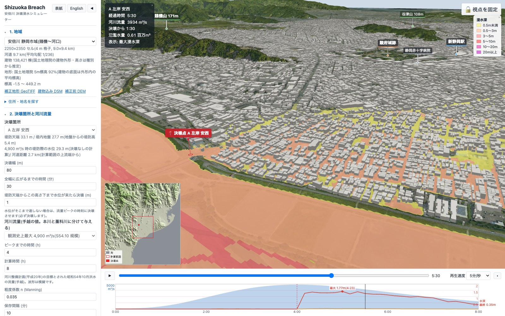

01
4か所の決壊箇所と、時間で広がる堤防の切り欠き
安倍川の左右岸から代表的な4か所（A: 左岸・安西、B: 右岸・向敷地、C: 左岸・南安倍、D: 左岸・中島）と「決壊なし（越水のみ）」を選択可能。 河川水位が設定高さ（標準で天端の1m下）に達した瞬間、または流量ピーク時刻に決壊が始まり、中央から指定した決壊幅（20〜300 m）へ時間とともに広がりながら堤内地盤の高さまで切り欠かれます。
- A: 左岸 安西（2.7 km）
- B: 右岸 向敷地（4.3 km）
- C: 左岸 南安倍（5.7 km）
- D: 左岸 中島（8.4 km）